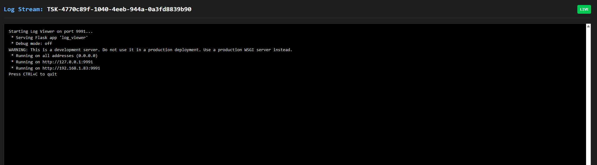

🛰️ Titan Orchestrator
Titan is a lightweight distributed execution runtime designed to bridge the gap between Logical DAG Orchestrators (e.g., Airflow/Dagster), Dynamic Agent Runtimes (LLM-driven systems), and Service Schedulers (Micro-PaaS for long-running APIs).
Traditional workflow engines are responsible for deciding task order. Titan is responsible for deciding:
- Where it runs: Enforcing data locality and node affinity.
- How it dynamically scales: Real-time load detection for auto-scaling up and graceful descale.
- How execution survives failure: Zero-loss state recovery via the TitanStore AOF.
- Which hardware executes which task: Capability-based GPU vs. CPU routing.
All within a single zero-dependency binary.
flowchart LR
subgraph Clients["User / Clients"]
direction TB
SDK["Python SDK Agent"]
YAML["YAML Pipeline"]
Dash["Web Dashboard"]
end
subgraph ControlPlane["Titan Control Plane"]
Master["Titan Master"]
end
subgraph DataLayer["State & Persistence"]
Store[("Titan Store<br>(Optional)")]
end
subgraph Grid["Compute Grid"]
direction TB
W1["Worker Node"]
W2["Worker Node"]
W3["Worker Node"]
end
SDK -- "Submit Job" --> Master
YAML -- "Submit Job" --> Master
Master -- "Distribute" --> W1
Master -- "Distribute" --> W2
Master -- "Distribute" --> W3
W1 -. "Data Bus (IPC)" .-> Master
W2 -. "Data Bus (IPC)" .-> Master
W3 -. "Data Bus (IPC)" .-> Master
Master -. "Stream Stats" .-> Dash
W1 -. "Live Logs" .-> Master
Master <-->|"AOF / State / Data Bus"| Store
classDef optional fill:#f9f9f9,stroke:#333,stroke-dasharray: 5 5;
class Store optional;📈 The Capability Spectrum
Titan is designed to grow with your system's complexity:
- Level 1: Distributed Cron (The "Scheduler") Run Python scripts on a remote machine in a specified sequence or distributed in parallel.
- Level 2: Service Orchestrator (The "Platform") Deploy long-running API servers and keep them alive, restarting them automatically on crash.
- Level 3: Agentic Execution Runtime (The "Autonomous Mode") Programmatically construct execution graphs at runtime where software agents spawn downstream compute tasks conditionally based on LLM decisions or system states.
📊 Built-In Dashboard
Titan includes a lightweight Python Flask dashboard to visualize cluster health, monitor worker load, and stream stdout/stderr from distributed jobs in real-time.

Live Log streaming
Monitor remote worker execution directly from the control plane UI in real-time.

🧩 Included Examples
The repository includes a comprehensive titan_test_suite/ with ready-to-run examples demonstrating Titan's full range of capabilities:
The examples are added as folders for each category,
- Static YAML Pipelines: Templates for basic Diamond Patterns, massive parallel Fan-outs, and strict hardware-aware routing (e.g., forcing tasks to
GPUnodes). - Dynamic Logic Switches: Python SDK scripts that simulate measuring system traffic and dynamically spawn entirely different DAGs on the fly.
- Autonomous Agents: A recursive, self-healing agent that tracks its own retry attempts globally via TitanStore and spawns clones across the cluster until a fragile task succeeds.
- Dagster Integration: A complete hybrid pipeline where Dagster manages the UI and data lineage, while Titan handles the physical distributed compute and log streaming.
💡 Built with Titan: The official JavaDocs for the Titan Core Engine were completely generated, zipped, and distributed using Titan itself as the execution runtime!
🚀 Quickstart: Run your first distributed task in 5 minutes 🧠 Read the Architecture Deep Dive